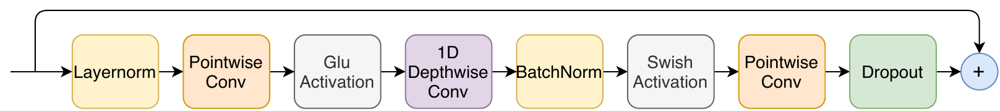

Convolution-augmented transformers for speech recognition
Conformer blends CNNs and transformers
Here is the question: how do you build an ASR (automatic speech recognition) model that hears both the phoneme edge, a phoneme being one distinct sound of a language, and the whole sentence? Vanilla transformers are great at global context but clumsy with local detail like phoneme edges and formants (the resonant frequency bands that give each vowel its identity). CNNs nail local structure but miss global dependencies. The Conformer, a "convolution-augmented transformer," takes both. And unlike most hybrids, this one actually worked.
Text models get neat little tokens, like a word or part of a word. Speech is a continuous waveform, typically sampled at 16 kHz, so the first job is turning it into features: usually 80-dim filterbank frames, each the energies in 80 frequency bands on the mel scale (a pitch scale spaced by how pitch is perceived), about 100 frames per second. A linear or convolutional layer then projects each frame up to the model dimension, the job an embedding layer does for text. The whole recording the model takes in at once is one utterance.
import torch, torch.nn as nn, torchaudio
wave = torch.randn(1, 16000) # 1 s of audio at 16 kHz
fbank = torchaudio.compliance.kaldi.fbank(
wave, num_mel_bins=80) # (98, 80): about 100 frames x 80 bands
x = nn.Linear(80, 256)(fbank) # (98, 256): each row is one frame's "token"
One slice of sound becomes one row of 80 filterbank energies, then one row of the model's input.
Before the blocks, most systems shrink time itself.
In the Conformer paper (Gulati et al., 2020), the encoder (the part that reads the frames and turns them into learned representations) first runs a convolution subsampling layer on those 80-channel, 10 ms frames, and only then the stack of Conformer blocks.
Strided subsampling folds each group of s neighboring frames, the stride, into one wider output frame, so T frames become T over s. In the toy, stride 2: 40 frames in, 20 frames out. The paper stacks two stride-2 convolutions, 4x in total. A minimal version:
s = 2 # stride
sub = nn.Conv1d(80, 256, kernel_size=s, stride=s) # each group of s frames -> one frame
y = sub(fbank.T.unsqueeze(0)).transpose(1, 2) # (1, 49, 256): T/s frames
Why shrink time at all? Attention scores every frame against every other frame, so its cost grows with T2, and T is 100 frames a second. Merging neighbors before the first block is the cheapest speedup in ASR:
Strided subsampling in two relations: shrink time before the blocks, and the attention bill shrinks with the square.
output length = Ts, attention cost ∝ (Ts)2
Each group becomes one surviving output frame, so the output frame count is the input count divided by s. T is the number of frames, 100 per second of speech on this page, and s is the stride from the steps above. The ∝ sign reads proportional to: the attention cost grows in proportion to that square. Because the cost follows the square, stride 2 makes it one quarter and stride 4 one sixteenth. The price is resolution: each surviving frame spans s times 10 ms, so a 30 ms phoneme can die inside a single frame at large stride.
Input:40 frames
silencekaetsil
Output:20 frames
At stride 2, each output frame merges the pair of input frames above it.
Strided subsampling shrinks time before the blocks
Stride:
Input:40 frames
silencekaetsilence
Output:20 frames
Folding time cuts the attention bill, and a segment shorter than one folded frame loses its own frame.
A Conformer block: feed-forward, attention, convolution, feed-forward
The plain transformer block: attention, then feed-forward
input x
Self-attention
MHSA
+ skip
residual
Feed-forward
FFN
+ skip
residual
out
The Conformer block: convolution between two feed-forwards
input x
Feed-forward × ½
half capacity
+ skip
residual
Self-attention
MHSA
+ skip
residual
Convolution
new module
+ skip
residual
Feed-forward × ½
half capacity
+ skip
residual
out
attentionfull feed-forwardhalf feed-forward (bold border)convolution, new in Conformer (bold border)
In self-attention each frame mixes in context from other frames, weighted by how well they match; MHSA, multi-head self-attention, runs several such mixes side by side. The transformer block runs attention then one full feed-forward. Conformer splits the feed-forward into two half-strength halves, sandwiches self-attention and the new convolution module between them, and gives every module its own residual skip, as Figure 1 shows. Bold borders mark what changed.
The two halves are a macaron-style feed-forward network: the attention and convolution modules sit between them like the filling in a macaron. They add capacity and non-linearity but don't mix across time, and each is scaled by half so the pair matches the one FFN of a vanilla transformer.
The same five lines, written out as static equations. In them, x is the input frame vector, and x̃, x′, x″, x‴ are the frame after each stage:
One frame through the block in five lines, first half: a half-strength feed-forward, attention, and convolution.
x̃ = x + ½·FFN(x)
Add a half-strength feed-forward pass to the frame, so the frame gets richer on its own before anything mixes across time. The ½·FFN is that half-strength feed-forward; two halves make one whole. The result is x̃, x with a tilde over it, the frame after this first stage.
x′ = x̃ + MHSA(x̃)
Add attention: the frame borrows context from far away frames and adds that to itself. MHSA is multi-head self-attention. The result is x′, x prime, the frame after attention, built from x̃.
x″ = x′ + Conv(x′)
Add the convolution module: the frame sharpens its local edges using only its close neighbors. Conv is the convolution module. The result is x″, x double prime, the frame after convolution, built from x′.
And the block closes: the second half feed-forward, then the layer norm.
x‴ = x″ + ½·FFN(x″)
Add the second half-strength feed-forward pass, so the two halves together make one full feed-forward. The result is x‴, x triple prime, the frame after this stage, built from x″.
y = LayerNorm(x‴)
Run layer norm on x‴, the triple-primed frame from the line above: the frame steadies its scale and leaves the block with the same shape it entered. LayerNorm does that steadying by normalizing each frame across its own channels, centering and scaling them. LayerNorm steadies the frame for the next block, y is the block output, same shape as x, and in every line the + is the residual add: each module's output joins the frame.
In the PyTorch block code on this page, ConformerBlock.forward runs these five lines in the same order.
Three operations the convolution module uses:
Pointwise conv, depthwise conv, and the GLU gate.
pointwise: yt = W·xt
A 1 by 1 convolution: the matrix W mixes the channels of frame t, xt, and never looks at neighboring frames.
depthwise: yt,c = Σm wc,m·xt+m,c
Channel c has its own filter wc, and m runs over the filter's taps around frame t: neighbors in time mix, channels never do.
GLU(a, b) = a ⊙ σ(b)
The GLU (Gated Linear Unit) splits its input into halves a and b. σ, the sigmoid, squashes b into gates between 0 and 1, and ⊙ multiplies entry by entry, so b decides how much of a passes. That is why the projection before it expands to twice the width.
Walk one frame through the block
frame 0frame 12 (ae)frame 23
frame vector
One frame through the block in five lines.
x̃ = x + ½·FFN(x)
Add a half-strength feed-forward pass to the frame, so the frame gets richer on its own before anything mixes across time.
x′ = x̃ + MHSA(x̃)
Add attention: the frame borrows context from far away frames and adds that to itself.
x″ = x′ + Conv(x′)
Add the convolution module: the frame sharpens its local edges using only its close neighbors.
x‴ = x″ + ½·FFN(x″)
Add the second half-strength feed-forward pass, so the two halves together make one full feed-forward.
y = LayerNorm(x‴)
Run layer norm on the result: the frame steadies its scale and leaves the block with the same shape it entered.
x the input frame vector; x̃ the frame after the first feed-forward stagex′ the frame after the attention stagex″ the frame after the convolution stagex‴ the frame after the second feed-forward stage½·FFN half-strength feed-forward, stages 2 and 5; two halves make one whole (the blue bar grows)MHSA multi-head self-attention, stage 3: the gray arcs borrow context from far framesConv the convolution module, stage 4: the green bracket sharpens local edgesLayerNorm stage 6: steadies the frame for the next block (the blue bar settles)y the block's output, same shape as x+ residual add, each module's output joins the frame= defines the frame's next state
Each module adds one thing to the frame, and the frame leaves the block the same shape it entered.

Scroll sideways to read the stage labels.
Rebuilt from Figure 2 of Gulati et al. (Interspeech 2020). arXiv:2005.08100
Figure 2 of the paper: "Convolution module. The convolution module contains a pointwise convolution with an expansion factor of 2 projecting the number of channels with a GLU activation layer, followed by a 1-D Depthwise convolution. The 1-D depthwise conv is followed by a Batchnorm and then a swish activation layer."
Rebuilt from Figure 1 of Gulati et al. (Interspeech 2020). arXiv:2005.08100
Figure 1, verbatim caption: "Conformer encoder model architecture. Conformer comprises of two macaron-like feed-forward layers with half-step residual connections sandwiching the multi-headed self-attention and convolution modules. This is followed by a post layernorm."
Two halves make one whole: together they contribute exactly as much as the single FFN in a vanilla transformer block.
The paper's reported models, all trained and scored on LibriSpeech, a standard dataset of read speech with its text. Here d is the model dimension and params are the reported parameter counts; all three Conformers use a convolution kernel of 32 taps (steps along the signal):
Model
blocks
d
params
Conformer (S)
16
144
10.3M
Conformer (M)
16
256
30.7M
Conformer (L)
17
512
118.8M
Transformer transducer
139M
The Transformer transducer is a streaming recognizer that writes text as the audio arrives, with no convolution module; ContextNet (L) is a large convolutional recognizer, the paper's strongest non-attention baseline. WER is word error rate, lower is better, scored on test-clean (cleaner, easier recordings) and test-other (harder ones).
LibriSpeech WER (%) on test-clean / test-other, no external LM (no separate language model helping it choose words). Numbers reported by Gulati et al., "Conformer", 2020. Lower is better; the highlighted row marks the model with the lowest test-other WER (4.3).
Model
test-clean
test-other
Transformer (transducer)
2.4
5.6
ContextNet (L)
2.1
4.6
Conformer (M)
2.3
5.0
Conformer (L)
2.1
4.3
Look at the medium Conformer: at 30.7M params it already beats the 139M-param transformer transducer. Local plus global beats global alone. That is the payoff of the sandwich.
How much of each model is the convolution module? A rough estimate takes each reported total as given and counts only the conv module's two pointwise projections, ignoring biases, LayerNorm and the depthwise conv's own params:
The convolution module's parameter estimate, per block and per model.
conv params per block ≈ 3d2, conv params per model ≈ 3d2 × N
Estimate the convolution module in one block as about 3d², three times d squared (d times d), from its two pointwise projections only: one to expand to twice the model dimension before the GLU gate, then one to project back to the model dimension. Multiply by the number of blocks to get the model's convolution total. d is the model dimension from the model list above. N is the block count for that model size: 16, 16, and 17 for S, M, and L. The ≈ marks that this is the stated approximation, not an exact count.
for name, N, d, total in [("S", 16, 144, 10.3e6), ("M", 16, 256, 30.7e6),
("L", 17, 512, 118.8e6)]:
conv = 3 * d**2 * N # two pointwise projections per block
print(name, conv / 1e6, conv / total) # M: about 3.1M, about 10 percent
The conv module costs only about 3.1M of Conformer (M)'s 30.7M params.
The WER numbers are the paper's reported results with the conv module in place, so removing the module below only subtracts its param cost; it does not predict the WER without it. The kernel size does not enter the estimate: the cards show the paper's 32, and the PyTorch code further down uses 15 as a round working number.
The convolution module costs about 10 percent of the parameters
WER as reported, with the conv module in place.
The conv module costs about 10 percent of the params, and Conformer (M) already beats a 139M transformer.
The first FFN is a 2-layer MLP (multilayer perceptron) applied to each frame on its own:
The feed-forward network, one frame at a time.
FFN(x) = W2·Swish(W1·x)
W1 expands the frame x from the model dimension, 256, to the feed-forward width, 1024 (the usual 4x); Swish is a smooth activation; W2 projects back to 256. The output is halved before the residual add, the macaron half-step.
Multi-Head Self-Attention with Relative Positional Encoding
The input is now a batch of frames (a group processed together), each a vector at the model dimension. Each head projects them into queries (what a frame looks for), keys (what it offers) and values (the content others pull in); with a model dimension of 256 and 4 heads, every head gets its own 64-dim room to work in. Attention scores every frame against every other, divides by the square root of the head dimension, turns the scores into weights that sum to 1 with softmax, and mixes the values. The heads are then concatenated and projected back.
Unlike a vanilla transformer, which adds absolute position encodings (sine and cosine waves) to each input, Conformer uses relative positions, which generalize better to long sequences and relative timing. Speech is shift-invariant: a "ba" at 1 second and at 10 seconds should be treated the same. What matters is how far apart the frames are, not their absolute index.
So the inputs stay untouched and the score gains a bonus for the distance between two frames. The paper uses Transformer-XL's sinusoidal relative encoding; this page shows the simpler learned-table version, one vector per offset up to a maximum distance, shared across heads. For query frame i against key frame j:
The relative-position attention score: content match plus position bias.
score(i, j) = qi · kj√dk + qi · ri-j
In words: the usual query-key match, plus a learned bonus for how far apart the two frames are. Each · is a dot product: multiply the two vectors entry by entry and add the products, first the query with the key, then the query with the relative embedding. qi is the query vector of frame i and kj is the key vector of frame j. dk is the head dimension, and dividing by its square root keeps the scores in a range softmax can handle. ri-j is the relative embedding for the offset i minus j, the signed distance between the two frames. Two pairs with the same offset get the same position term no matter where they sit.
The same simplified score in PyTorch, for a batch x of shape (B, T, d):
B, T, d, H, max_rel = 8, 100, 256, 4, 32 # max_rel: example maximum distance
dk = d // H # 64 per head
W_q, W_k, W_v = (nn.Linear(d, d) for _ in range(3))
q, k, v = (W(x).view(B, T, H, dk).transpose(1, 2) for W in (W_q, W_k, W_v))
rel = nn.Embedding(2 * max_rel + 1, dk) # one vector per offset, shared by heads
off = torch.arange(T)[:, None] - torch.arange(T)[None, :] # i - j
r = rel(off.clamp(-max_rel, max_rel) + max_rel) # (T, T, dk)
score = q @ k.transpose(-2, -1) / dk**0.5 + torch.einsum("bhid,ijd->bhij", q, r)
out = score.softmax(dim=-1) @ v # (B, H, T, dk)
content matchposition biasnegative term
Each bar is one key's attention weight from the "ae" frame, split into content match and position bias.
How attention spreads across frames
Relative positions ask about distance, so a "ba" is a "ba" at second 1 or second 10; absolute positions ask about the clock.
The convolution module adds local context
Next is the convolution module, the big difference from vanilla transformers: a depthwise separable convolution that models local structure explicitly. Its input already carries long-range context from attention, and it layers on short-term temporal structure that attention is too coarse to catch. It looks like the blocks in EfficientNet and MobileNet, two convolutional networks built for efficiency.
A LayerNorm steadies each frame across its channels.
A pointwise convolution expands to twice the model dimension, and the GLU gates it back down to the input's shape.
A depthwise convolution runs along time, each channel with its own filter (kernel_size=15 in the code below). Each output frame now sees a local window of input frames, its receptive field.
'Same' padding keeps the length unchanged. Streaming ASR switches to causal padding, on the left only, so the model doesn't peek into the future.
Normalization Strategy: LayerNorm vs. BatchNorm
Would LayerNorm or BatchNorm work better after the depthwise conv? LayerNorm normalizes each frame across its channels, which would wash away the temporal patterns the conv just learned. BatchNorm normalizes each channel across the batch and time, so each channel keeps its identity and the normalization is consistent across time, which keeps the convolution filters stable. A Swish activation follows, letting small negative values through instead of clipping them to zero.
Same tensor, two directions. LayerNorm takes the mean and variance over one frame's channels; BatchNorm takes them over one channel through every frame in the batch.
BatchNorm also has two modes: training uses the current batch's statistics while stockpiling running estimates, and inference uses only the stockpile.
bn = nn.BatchNorm1d(256) # x: (B, 256, T), channels first
bn.train(); y = bn(x) # batch mean and variance; updates bn.running_mean, bn.running_var
bn.eval(); y = bn(x) # the stored running stats, whatever this batch looks like
Convolution mixes channels, then FFN finishes the block
After BatchNorm and Swish, a second pointwise convolution with dropout (randomly zeroing values during training so the module cannot lean on any single one) maps the model dimension back to itself, and a residual joins the module's start to its output. Looks redundant, but it is not: the depthwise conv never mixes channels, and this pointwise conv is where channels finally talk to each other.
The whole convolution module, top to bottom. The pointwise convs mix channels, the depthwise conv mixes over time, and the output keeps the input's shape.
After the convolution module, a second half-strength feed-forward with its residual completes the macaron. Same shape in, same shape out, so you can stack as many blocks as your budget allows.
The first FFN before the attention module enriches the frame-level features before they interact globally. The second FFN enriches the representation after it has been mixed both globally and locally. That symmetry is why the block trains more stably than the same pieces stacked in a different order.
Read one probe frame two ways. The conv covers only the probe and the 3 frames on each side, a rigid 7-frame (70 ms) window, toy-scaled from the real 15 taps. Attention covers the whole utterance with weights summing to 1.0, and can peak at a similar edge it heard frames earlier.
Local conv and global attention play different roles
Depthwise conv, kernel 7 (toy-scaled from 15)
Attention from the probe
bars sum to 1.0 at every probe position
The conv sees at most 70 ms around the probe; attention reaches any similar frame. That is why the block has both.
The block in PyTorch
Let's build the block piece by piece. First, the macaron FFN. This is just a normal two-layer MLP, but notice the residual is scaled by 0.5. That is the whole macaron trick: two of these add up to one full FFN.
import torch
import torch.nn as nn
import torch.nn.functional as F
class ConformerFFN(nn.Module):
def __init__(self, d_model, d_ff, dropout=0.1):
super().__init__()
self.linear1 = nn.Linear(d_model, d_ff)
self.linear2 = nn.Linear(d_ff, d_model)
self.dropout = nn.Dropout(dropout)
self.activation = nn.SiLU() # Swish
def forward(self, x):
out = self.linear1(x)
out = self.activation(out)
out = self.dropout(out)
out = self.linear2(out)
out = self.dropout(out)
return x + 0.5 * out # Macaron: scale by 0.5
Next, self-attention. I am showing the vanilla version here to keep it readable. The relative positional bias we talked about above slots right into the score computation.
Now the convolution module, the part that makes a Conformer a Conformer. Pointwise conv plus GLU, a depthwise conv over time, BatchNorm plus Swish, then pointwise back. The transpose dance: Conv1d wants channels first.
class ConformerConvModule(nn.Module):
def __init__(self, d_model, kernel_size=15, dropout=0.1, causal=False):
super().__init__()
self.layer_norm = nn.LayerNorm(d_model)
self.pointwise_conv1 = nn.Conv1d(d_model, 2*d_model, kernel_size=1)
padding = (kernel_size - 1) if causal else (kernel_size - 1) // 2
self.depthwise_conv = nn.Conv1d(
d_model, d_model, kernel_size,
groups=d_model, padding=padding
)
self.causal = causal
self.batch_norm = nn.BatchNorm1d(d_model)
self.pointwise_conv2 = nn.Conv1d(d_model, d_model, kernel_size=1)
self.dropout = nn.Dropout(dropout)
def forward(self, x):
residual = x
x = self.layer_norm(x)
x = x.transpose(1, 2) # (B, d_model, T)
x = self.pointwise_conv1(x)
A, B = x.chunk(2, dim=1)
x = A * torch.sigmoid(B) # GLU
x = self.depthwise_conv(x)
if self.causal:
x = x[:, :, :residual.size(1)] # trim if causal
x = self.batch_norm(x)
x = F.silu(x)
x = self.pointwise_conv2(x)
x = x.transpose(1, 2) # back to (B, T, d_model)
return residual + self.dropout(x) # residual
And finally, the whole block, the five pieces from the block section assembled in order.
class ConformerBlock(nn.Module):
def __init__(self, d_model=256, d_ff=1024, num_heads=4, kernel_size=15, dropout=0.1, causal=False):
super().__init__()
self.ffn1 = ConformerFFN(d_model, d_ff, dropout)
self.mhsa = MHSA(d_model, num_heads, dropout)
self.conv = ConformerConvModule(d_model, kernel_size, dropout, causal)
self.ffn2 = ConformerFFN(d_model, d_ff, dropout)
self.final_ln = nn.LayerNorm(d_model) # often added at block end
def forward(self, x, mask=None):
x = self.ffn1(x)
x = self.mhsa(x, mask)
x = self.conv(x)
x = self.ffn2(x)
return self.final_ln(x)
Streaming: understanding speech before the sentence ends
So how do you make the Conformer run in real time? First, attention becomes streaming attention: a mask limits what each query can see, so no frame waits on the future. Speech is ambiguous without a little right context, so each frame may peek a fixed number of frames ahead, paid for in latency.
Second, you can split the heads into multiple scales. A phoneme is about 50 ms, a word is about 500 ms: give one head a short leash and another the whole pasture, and the same layer catches both.
Chunked emission: audio arrives in chunks of C frames, a frame reads every earlier frame plus keys up to the end of its own chunk and L look-ahead frames beyond it, and a chunk's tokens are emitted together once its last frame and those L frames arrive. The first frame of a chunk waits longest, the last frame waits only L frames, so the wait grows with chunk size. A frame is 10 ms on this page:
Streaming in two relations: what the look-ahead costs, and what it buys.
longest wait = (C − 1 + L) × 10 ms, shortest wait = L × 10 ms
A chunk's tokens leave together once the chunk's last frame and its L look-ahead frames arrive. The chunk's first frame waits for the other C − 1 frames of its chunk plus the L look-ahead frames; its last frame waits for the look-ahead only. The same frames ahead are what each frame may read, so more context costs more waiting. L and C are as defined above, and 10 ms is the page's frame duration.
The mask in code, ready for the mask argument of the MHSA class below:
def chunk_mask(T, C, L):
t = torch.arange(T)
i = t[:, None] # query
j = t[None, :] # key
# own chunk + L ahead
return j < (i//C+1)*C + L
mask = chunk_mask(12, 4, 2)
With chunk 4 and look-ahead 2, the first frame of a chunk sees 5 frames ahead and its token waits 50 ms; the chunk's last frame sees 2 ahead and waits 20 ms. Look-ahead 0 is block-causal: each frame sees its own chunk and nothing after it, and tokens still wait up to C − 1 frames for the chunk to finish. Chunk 1 with look-ahead 0 is the true causal triangle: zero wait, flying blind into the future.
Audio heard
7 / 12
Tokens emitted
4 / 12
Offline attention is a luxury. In streaming you rent the future by the frame, and the rent is latency. Tokens trail the audio by the rest of their chunk plus the look-ahead: 7 frames heard, 4 tokens out.
Streaming in chunks: more context costs more waiting
Chunk size (frames per chunk):
row i may look at the lit keys j →
Audio heard (orange row)
Tokens emitted (green rows)
Different heads watch different time scales
Short leash for phonemes, long leash for words: one layer covers both.
The convolution module uses "same" padding, which will need to change to causal padding, and the normalization, as we discussed in depth, needs to change as well.
Stack a few of these blocks and you get acoustic embeddings, one learned vector per frame summarizing what that frame of sound contains. Last step: turn frames into words.
One linear layer gives each frame a score per vocabulary item, and softmax turns those scores (logits) into probabilities. A CTC loss (connectionist temporal classification) then aligns them with the text without anyone marking which frame belongs to which character: it lets frames emit a blank, collapses repeats, and adds up the probability of every frame-by-frame path that collapses to the right text.
head = nn.Linear(256, vocab_size) # enc_out: (B, T, 256) from the blocks
log_probs = head(enc_out).log_softmax(dim=-1) # (B, T, vocab), log of the softmax
ctc = nn.CTCLoss(blank=0)
loss = ctc(log_probs.transpose(0, 1), # CTCLoss wants (T, B, vocab)
targets, input_lengths, target_lengths)
What came after Conformer
Streaming Conformer (causal + dynamic chunks)
The streaming Conformer is the live-audio version of the same sandwich: causal padding in the convolution, LayerNorm instead of BatchNorm (running stats measured over full utterances do not match a live chunk), and training on random chunk sizes so one model serves any latency budget at decode time. This is the dynamic-chunking line of work behind U2, the streaming recognizer built in the WeNet toolkit (Zhang et al., 2021), building directly on the streaming attention above.
Branchformer: two branches instead of a sandwich
The Branchformer (Peng et al., ICML 2022) replaces the sandwich with two parallel branches per layer: self-attention for long range and a conv-gated MLP (an MLP whose output a convolutional gate controls) for local detail, combined by learned merge weights. It matches or beats Conformer on the same benchmarks, and the merge weights are a free diagnostic of which layers lean local and which lean global.
Squeezeformer: maybe the sandwich is overkill
The Squeezeformer (Kim et al., NeurIPS 2022) asks whether the sandwich is overkill. It uses plain attention-then-conv-then-FFN blocks, no macaron, and adds a Temporal U-Net, named for its down then up shape over time: downsample the timeline so attention works on a squeezed sequence, then upsample back. Same accuracy at lower compute, because attention no longer pays full price on the full-length timeline.
Conformer (sandwich)
input x
Feed-forward × ½
Attention
Convolution
Feed-forward × ½
out
The point: the sandwich order is a design choice, not a law.
Branchformer (parallel)
input x
Attention
long range
Conv-gated MLP
local detail
Merge
learned weights
out
The point: parallel branches replace the sandwich, and the merge weights reveal each layer's local-vs-global lean.
Squeezeformer (squeeze then expand)
input x
Downsample
squeeze the timeline
Attention
short sequence
Upsample
expand back
out
The point: squeeze the timeline for attention, expand it back, and skip the macaron.
References
Gulati, A., et al. (2020). Conformer: Convolution-augmented Transformer for Speech Recognition. Interspeech. arXiv:2005.08100.
Peng, Y., et al. (2022). Branchformer: Parallel MLP-Attention Architectures to Capture Local and Global Context for Speech Recognition and Understanding. ICML. arXiv:2207.02971.
Kim, S., et al. (2022). Squeezeformer: An Efficient Transformer for Automatic Speech Recognition. NeurIPS. arXiv:2206.00888.
Zhang, B., et al. (2021). WeNet: Production Oriented Streaming and Non-streaming End-to-End Speech Recognition Toolkit. arXiv:2102.01547.